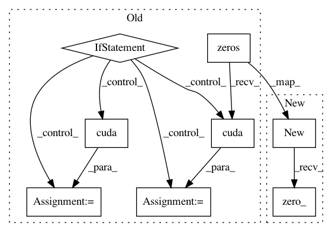

7929d68e8d79bae487858fef93e81d28aa708d40,lib/model/roi_crop/functions/roi_crop.py,RoICropFunction,backward,#RoICropFunction#Any#,27
Before Change
return output
def backward(self, grad_output):
grad_input1 = torch.zeros(self.input1.size())
grad_input2 = torch.zeros(self.input2.size())
//print("backward decice %d" % self.device)
if not grad_output.is_cuda:
roi_crop.BilinearSamplerBHWD_updateGradInput(self.input1, self.input2, grad_input1, grad_input2, grad_output)
else:
grad_input1 = grad_input1.cuda(self.device)
grad_input2 = grad_input2.cuda(self.device)
roi_crop.BilinearSamplerBHWD_updateGradInput_cuda(self.input1, self.input2, grad_input1, grad_input2, grad_output)
return grad_input1, grad_input2
After Change
return output
def backward(self, grad_output):
grad_input1 = self.input1.new(self.input1.size()).zero_()
grad_input2 = self.input2.new(self.input2.size()).zero_()
roi_crop.BilinearSamplerBHWD_updateGradInput_cuda(self.input1, self.input2, grad_input1, grad_input2, grad_output)
return grad_input1, grad_input2
In pattern: SUPERPATTERN
Frequency: 3
Non-data size: 8
Instances
Project Name: jwyang/faster-rcnn.pytorch
Commit Name: 7929d68e8d79bae487858fef93e81d28aa708d40
Time: 2017-12-20
Author: jyang375@t1000.cc.gatech.edu
File Name: lib/model/roi_crop/functions/roi_crop.py
Class Name: RoICropFunction
Method Name: backward
Project Name: jwyang/faster-rcnn.pytorch
Commit Name: 7929d68e8d79bae487858fef93e81d28aa708d40
Time: 2017-12-20
Author: jyang375@t1000.cc.gatech.edu
File Name: lib/model/roi_crop/functions/gridgen.py
Class Name: AffineGridGenFunction
Method Name: forward
Project Name: jwyang/faster-rcnn.pytorch
Commit Name: 7929d68e8d79bae487858fef93e81d28aa708d40
Time: 2017-12-20
Author: jyang375@t1000.cc.gatech.edu
File Name: lib/model/roi_crop/functions/gridgen.py
Class Name: AffineGridGenFunction
Method Name: backward